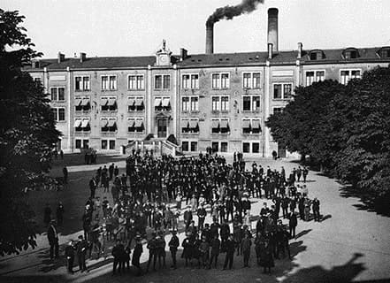

Le Mot du Proviseur
Le lycée Henri Loritz est l'un des premiers lycées technologiques de France ! Depuis sa création par Henri Loritz en 1844, le lycée a toujours eu pour vocation de former les futurs techniciens et contremaîtres des industries lorraines et françaises. Cette démarche a été entretenue grâce aux équipes pédagogiques qui veillent à garantir la promotion sociale et cherchent les talents parmi les jeunes qui frappent à la porte de l'établissement.
Berceau de l'enseignement artistique appliqué, le lycée a tissé des liens forts avec les artistes de l'école de Nancy et propose des enseignements d'arts appliqués, de design, etc.
Aujourd'hui, notre lycée a su développer des formations de haut niveau en proposant les classes préparatoires aux grandes écoles ou spécialisées. Ce sont quelques 12 formations de techniciens supérieurs (BTS) et 3 licences professionnelles qui sont proposées aux étudiants principalement dans des domaines industriels et d'arts appliqués. Nous offrons également des formations de géologie appliquée et de géomètre topographe.
Ces formations post-baccalauréat sont proposées sous statut scolaire et, pour certaines d'entre-elles, par apprentissage en partenariat avec les écoles d'ingénieurs de Nancy.
Le lycée Henri Loritz, qui est un lycée scientifique et technologique, propose, après la classe de seconde, les filières S et STI. Alors si vous cherchez une formation scientifique ou technologique et si vous avez la volonté de vous insérer dans l'industrie ou d'intégrer une grande école et que vous n'avez pas peur du travail, le lycée Henri Loritz est fait pour vous !
N'hésitez pas à contacter l'un des 200 professeurs ou la direction de l'établissement, qui sont à votre disposition. Venez également nous rencontrer lors des nombreuses manifestations d'information sur l'orientation ou nous sommes présents, ou bien tout simplement visiter l'établissement lors des nombreuses actions organisées tout au long de l'année.
Je souhaite que cette année 2018-2019 permette à tous les élèves du lycée de réussir leur scolarité et de viser les plus hautes qualifications pour réussir dans leur vie professionnelle. C'est l'ambition du lycée, cela doit être la vôtre !
Olivier Pallez
Proviseur
L'histoire du Lycée
Depuis sa fondation en 1844 jusqu'à nos jours, le lycée Loritz n'a cessé de se transformer, d'innover et d'évoluer.
Fondé le 1er octobre 1844 par un citoyen nancéien, Henri Loritz, le lycée portait à l'origine le nom de pensionnat Callot, et donnait alors sur la rue du Tapis Vert (actuellement chocolaterie Batt).
En 1881, son successeur, André Tabellion, doit se résoudre à une restructuration de l'école. Une société par actions, regroupant une grande partie de notables de la région, voit le jour sous l'appellation École professionnelle de l'Est. Les bâtiments de l'architecte nancéien Émile André sont toujours utilisés, même s'ils ont été agrandis et modernisés.
La statue en bronze qui orne la cour représente le fondateur Henri Loritz et date de 1904 (inauguration le dimanche 26 juin), et est l'œuvre d'Ernest Bussière. Le mur droit du hall d'entrée comporte le nom de 203 des élèves et des collaborateurs du lycée morts pendant la Première Guerre mondiale.

Les acteurs du lycée
La Vie Scolaire
La Vie Scolaire a pour mission d'accueillir, d'ncadrer les élèves en dehors des heures de cours en étroite collaboration avec les équipes pédagogiques. Elle appréhende le jeune d'un point de vue globale pour l'accompagner dans la réussite scolaire, la socialisation et la citoyenneté. L'apprentissage de la citoyenneté implique la mise en place de certaines règles et l'application du règlement intérieur. Ainsi, à l'image de ce que la vie sociale et professionnelle attend d'eux, les élèves doivent être respectueux des personnes et des biens. Ils doivent aussi être ponctuels, assidus et volontaires dans leur travail scolaire. Les surveillants et les CPE contrôlent dans ce cadre le comportement, l'assiduité et la ponctualité des élèves. Un suivi de chacun est effectué, en liaison avec les familles et les équipes pédagogiques de chaque classe. Ce suivi doit permettre aux élèves de se développer et d'acquérir les savoirs-être et savoirs-faire pour appréhender leur vie de futur citoyen. Le bureau de la Vie Scolaire se situe dans le bâtiment Lobau, à droite de l'escalier principal. Elle est composée du bureau des surveillants, ainsi que des bureaux des CPE.

1. Gestion des retards et des absences L'assiduité et la ponctualité s'appliquent aux élèves et étudiants mineurs comme majeurs. Le chef d'établissement et, par délégation, son représentant se réserve le droit d'apprécier le bien-fondé, après contact avec les familles, d'un motif d'absence ou de retard. Le nombre d'absences et retards figurent sur les bulletins scolaires et sont portés à la connaissance du conseil de classe. Un absentéisme important entrainera une mesure disciplinaire. a) Les absences Toute absence doit être justifiée. Le service de la vie scolaire doit être averti le jour même par téléphone ou tout autre moyen. Le motif doit être confirmé par écrit (dans le carnet de correspondance pour les lycéens) lors du retour de l'élève au lycée. Toute absence prévisible doit être précédée d'une demande écrite de la famille. Les élèves ne peuvent pas quitter l'établissement sans qu'une décharge ne soit signée par le responsable légal à la vie scolaire. b) Les retards La ponctualité constitue une marque de correction à l'égard du professeur et des autres élèves de la classe. Les retards nuisent à la scolarité et perturbent les cours. Tout retardataire doit impérativement se signaler et se justifier au bureau de la vie scolaire. Si le retard est inférieur à 15 minutes, l'élève muni de son billet visé, intégrera sa classe. Au-delà de 15 minutes, l'élève restera en permanence pendant la première heure de cours inscrite à son emploi du temps. Les conseillers principaux d'éducation jugeront de la recevabilité des motifs invoqués. 2. La demi-pension Le Lycée Henri LORITZ dispose d'un service de restauration pouvant accueillir les élèves de la seconde aux classes post baccalauréat. Cet accueil est étendu, dans les conditions prévues par la règlementation au personnel du lycée ainsi qu'aux commensaux autorisés par le chef d'établissement. L'accès au service de restauration s'effectue au moyen de la carte Multipass. En cas de perte ou d'oubli, les usagers doivent obligatoirement se présenter à un personnel d'intendance.